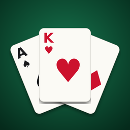

Renț, jocul de cărți românesc, pe iPhone. Joci contra 2–5 adversari conduși de calculator, fără internet, cu toate cele 8 jocuri: Popa de roșu, Dame, Carouri, Levate, Totale, Whist (sau Totale Plus), Zece de treflă și Renț.
Varianta web: draghicioiu.ro/rentz
După ce reguli se joacă?
După regulamentul clasic de pe Wikipedia, combinat cu regulamentele PokerStars și casino.com.ro. Regulamentul complet e în aplicație, la „Reguli”. Poți alege punctajul clasic (Popa −300) sau varianta de cazino (Popa −100).
Se joacă pe bani?
Nu. Nu există pariuri, jetoane, bani sau cumpărături în aplicație. E un joc de cărți, pentru plăcerea jocului.
Pot continua o partidă mai târziu?
Da. Partida se salvează după fiecare rundă terminată și o continui din ecranul de start.
Pot juca cu prietenii?
Deocamdată adversarii sunt conduși de calculator. Poți alege între 3 și 6 jucători la masă.
Email: danieldraghicioiu@gmail.com
WhatsApp: +40 765 373 595